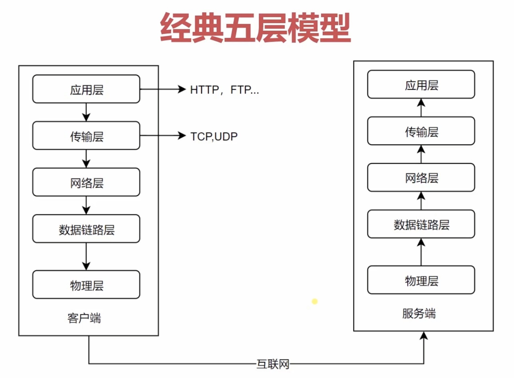

一、网络协议分层
我们主要学习应用层和传输层，低三层只做简单的了解。
物理层：主要作用是定义物理设备如何传输数据
数据链路层：在通信的实体间建立数据链路连接
网络层：为数据在结点之间传输创建逻辑链路
传输层：向用户提供可靠的端到端（End-to-End）服务，且向高层屏蔽了下层数据通信的细节
应用层：为应用软件提供了很多服务，构建于TCP协议之上，屏蔽网络传输相关细节
二、HTTP 协议发展历史
HTTP/0.9
1）只有一个 get 命令；
2）没有 header 等描述数据的信息；
3）服务器发送完毕，就关闭 TCP 连接。
HTTP/1.0
1）增加了很多命令；
2）增加了status code 和 header；
3）增加了多字符集支持、多部分发送、权限、缓存等。
HTTP/1.1
这个版本只是在 HTTP/1.0 上增加了一些功能来优化整个网络连接。
1）支持了持久连接；
2）支持了 pipeline，可以在同一个连接里发送多个请求，但是在服务器端我们需要按照请求的顺序进行返回，要等前一个请求的数据发送完成之后，才能发送下一个请求的数据，是串行的，性能不是特别好，因此这个部分在 HTTP2 里也进行了一个优化；
3）增加了 host 和其他一些命令，其中，有了 host 之后我们就可以在同一个物理服务器上同时跑多个 web 服务，然后通过 host 字段表示我请求的是这台物理服务器上的具体哪一个服务。
HTTP2
1）所有数据以二进制传输，HTTP/1.1 里大部分数据都是由字符串进行传输的；
2）同一个连接里面发送多个请求不再需要按照顺序来进行返回处理，可以同时返回多个请求中的数据，是并行的，让传输效率得到了质的提升；
3）增加了头信息压缩以及推送等提高效率的功能
三、HTTP 三次握手
客户端与服务器端进行请求与响应需要先创建 TCP Connection。因为 HTTP 不存在连接这个概念，它只有请求与响应的概念。但是请求和响应的都是数据包，它们之间要通过一个传输的通道，也就是 TCP Connection。HTTP 请求就是在这个连接的基础上发送的，在不同的版本里，有着不同的模式。
HTTP/1.0 ，TCP 连接是在一个 HTTP 请求创建的时候被创建的，服务器响应之后这个 TCP 连接就被关闭了。
HTTP/1.1 可以声明让这个 TCP 连接一直保持着。TCP 连接在创建的过程中需要经历三次握手，代表着有三次网络传输，然后才创建了这个连接。如果我们保持了 TCP 连接，就可以减少后续创建 TCP 连接的开销。
HTTP2 允许 TCP 连接上的 HTTP 请求并发执行。
三次握手过程

为什么要三次握手
因为网络传输是有延时的。如果客户端发起了创建连接的请求，然后服务器端直接就创建了这个连接，并把数据包返回给了客户端。但是数据包因为网络的原因丢失了，导致客户端一直没有接收到服务器返回的东西，并且客户端可能设置了超时时间，一段时间之后这个连接创建的请求就关闭了，然后又发起一个新的创建连接的请求。但是因为它们之间没有进行第三次握手，服务器端根本不知道客户端有没有接收到我返回的数据，服务器端也没有接收到客户端给的创建或者关闭这个请求的确认信息。然后服务器端创建的端口就会一直开着，等着客户端发送实际的请求数据。这个开销就浪费了，因为服务器端不知道这个连接已经创建失败了，客户端此时可能已经创建别的新连接去了。所以我们需要三次握手来确认这个过程，让客户端与服务器端都能够及时地察觉到这个连接因为网络等一些原因已经创建失败了，服务器端也不用让创建的端口一直等在那里了。
三次握手主要是为了规避网络传输过程中延时而导致的一些服务器开销的问题。

Litchi
怕什么真理无穷，进一寸有一寸的欢喜